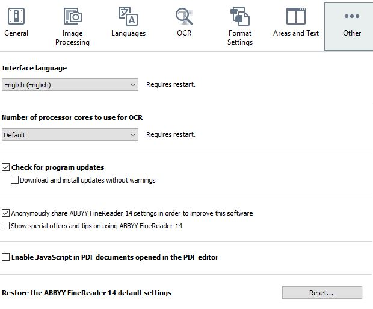

Settings
When adjusting AFR's many options, use these settings.
To access the critical options for AFR, select . The Options window has seven tabs across the top.
- General.
- Select .
- Select .
- Image Processing.
- Uncheck Enable background recognition.
- Check Automatically process page images, and select Preprocess page images.
- For Image preprocessing settings, uncheck the first option and check Correct page orientation and User recommended settings.

- Languages. In the Automatically select OCR
languages box, specify these languages: English; French;
German; Greek; Latin. If working on eb03, see OCR for eb03. Note: Be alert for pages with other languages, like Hebrew, that need different settings. Make a note of them in the inventory file. After you have output your full set of pages, you can go back to them with changed language settings to improve the OCR results by outputting as individual pages.

- OCR.
- For PDF recognition mode, select Use OCR.
- Set OCR speed and accuracy to Thorough recognition. Set Document type to auto.
- Uncheck everything in Detection of structural elements and Barcodes.
- Set Use of patterns and training in OCR Editor to . See remarks in OCR Training.

- AFR needs to know where to locate the shared user patterns and language files for the edition. Select Load Patterns and Languages.... Navigate to the afr-user/UserPatterns folder in the edition folder, and select the FBT file located there. For example, if you are working on eb03, it will be located in production/eb03/afr-user/UserPatterns.

- Format Settings. Select HTML as the
Document type. The Document layout
should be Formatted text. Use Unicode
(UTF-8) for the Encoding. Everything else
should be unchecked.

- Areas and Text. Check all options for Verification
settings.

- AFR needs to know where the shared user dictionary is located. Open the
User dictionaries... window. Select
English (United States) and use the
Browse... button to navigate to the
afr-user/UserDictionaries folder for the edition
you are working on. for example, if you are scanning eb11, the dictionaries
are located in
production/eb11/afr-user/UserDictionaries.

- AFR needs to know where the shared user dictionary is located. Open the
User dictionaries... window. Select
English (United States) and use the
Browse... button to navigate to the
afr-user/UserDictionaries folder for the edition
you are working on. for example, if you are scanning eb11, the dictionaries
are located in
production/eb11/afr-user/UserDictionaries.
- ... Other. Use the default options, except uncheck
Show special offers and turn off Enable
JavaScript in PDF documents. 
- Click OK when finished, to save all settings in the Options window.